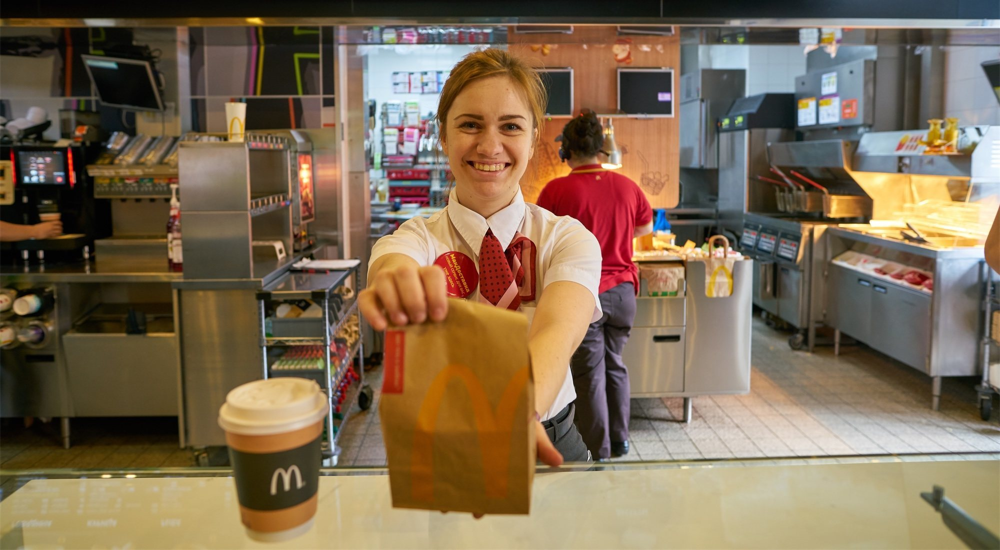

Bienvenido a McDonald's, donde hemos estado sirviendo comida deliciosa y creando experiencias memorables para nuestros clientes durante más de 60 años. Como una de las principales cadenas de comida rápida del mundo, nos enorgullece ofrecer comidas de calidad, un servicio excepcional y un ambiente acogedor. En McDonald's, creemos en ofrecer un menú diverso que se adapte a todos los gustos y preferencias. Desde nuestra clásica Big Mac y nuestras crujientes papas fritas, hasta nuestras refrescantes ensaladas y deliciosos postres, hay algo para todos. Pero somos más que un lugar para comer rápido. Estamos comprometidos a generar un impacto positivo en las comunidades que atendemos. A través de iniciativas como Ronald McDonald House Charities, apoyamos a las familias necesitadas y contribuimos al bienestar de los niños. Nuestro dedicado equipo de empleados es el corazón de todo lo que hacemos. Trabajan diligentemente para asegurarse de que cada visita a McDonald's sea una excelente experiencia, brindando un servicio amigable y manteniendo los más altos estándares de limpieza y seguridad alimentaria. Ya seas un fanático de siempre o estés probando McDonald's por primera vez, nos emociona tenerte como nuestro invitado. Únete a nosotros y descubre por qué millones de personas en todo el mundo eligen McDonald's para sus comidas favoritas, ubicaciones convenientes y un ambiente cálido y acogedor.
